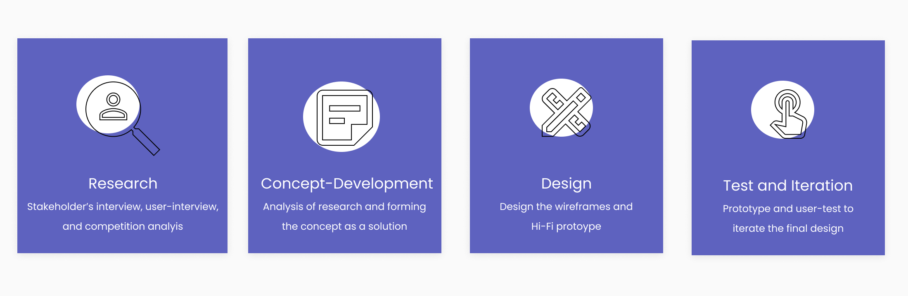
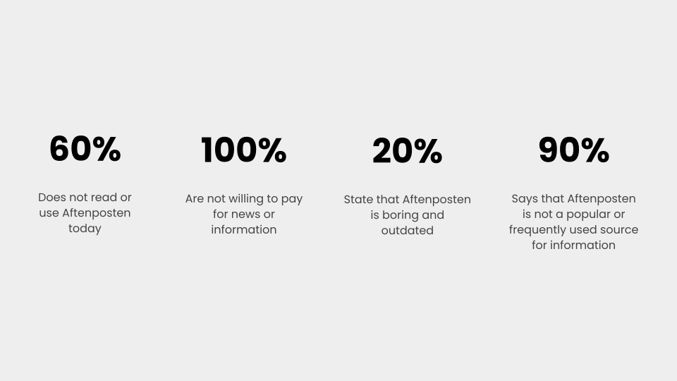
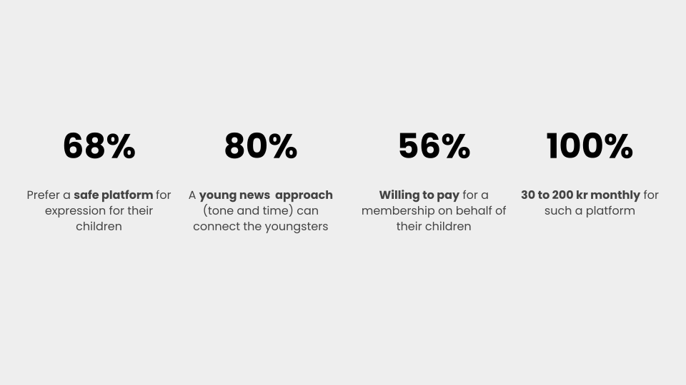
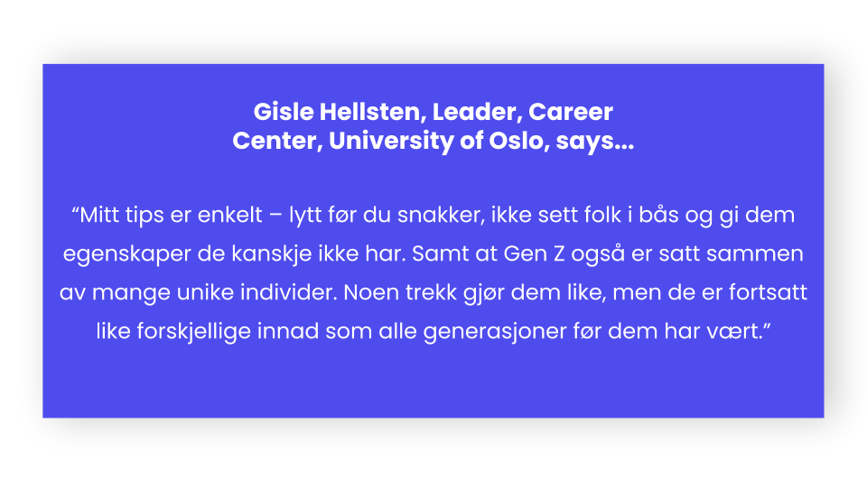
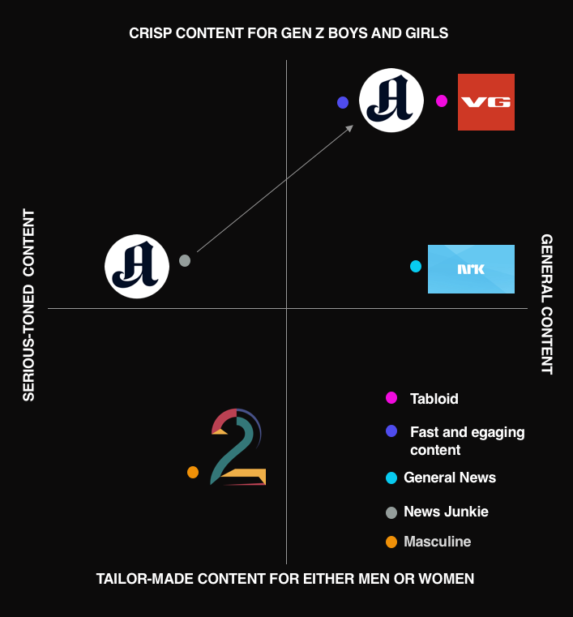
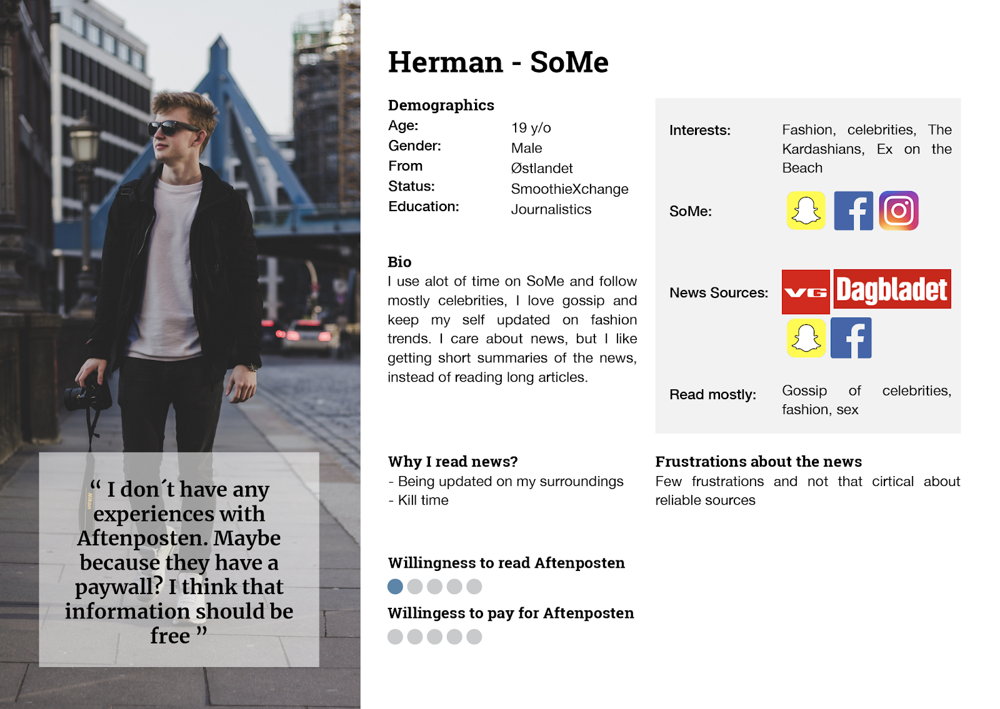
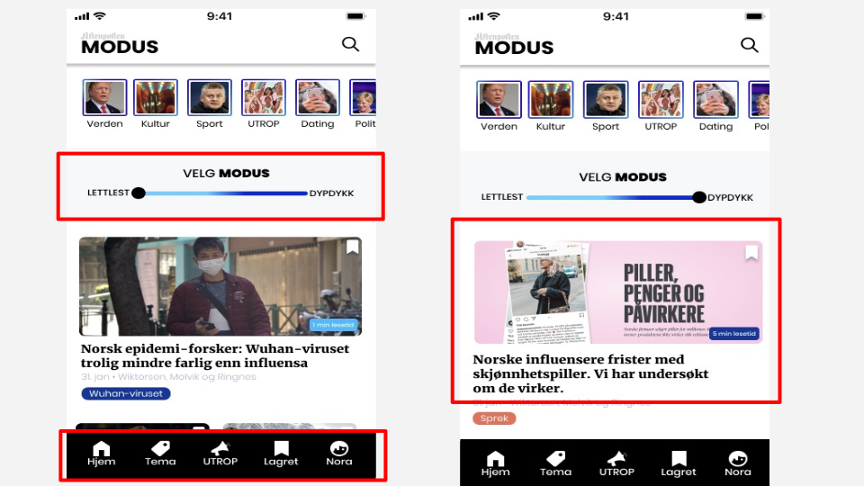

Working with a project from Aftenposten news brand was fun. I was lucky to be a part of lovely fellow students.
OVERVIEW:
Aftenposten’s goal is to reach out to young people between 18 to 25 years and how it can carve out ways to connect itself as a news brand among them.
THE GOAL
Design Challenge: How can Aftenposten present news and relevant content to young people (18-25) to increase use and engagement among them?
MY ROLE IN THE TEAM:
Research and Concept development was the main. In the later improved version, I iterated the user-experience of the Design and visual interface.
As I mentioned in the previous project, I always like to change the process according to the design problems, the business needs, time-frame, etc. So, this time, we as a team began with research to know the user-personas, stakeholder’s expectations, and the competitors of Aftenposten. Let’s walk through the process.
DEFINE THE USER
Understanding the market of the news media and its consumers was vital for us. Interviewed the Ex-editor-in-chief and CEO at Aftenposten. Our discussions centered around- Aftenposten’s competitors in the market, characteristics of young generation as target-audience, why Aftenposten wants to reach them, the target-audience's customer-journey, and a lot more.
We also referred to the Reuters report ‘How Young People Consume News and the Implications for Mainstream Media’ to study the patterns of the young generation of 18 to 25 years of age.
During our workings we first sorted out this group of 18 to 25 years old as ‘Gen Z’. Studying their characteristics, behaviour, news consumption habits became spontaneous.
Gen Z analysis:
Also known as ‘iGeneration’- count Greta Thunberg and Zendaya among others- are an entirely new cohort of consumers.
Who are they? A generation born between 1996 to 2010. Young and vibrant. Most-ethnically diverse. Grew up with technology and social media. Embrace entrepreneurialism and are eco-conscious. The mainstream media feel the need to focus on their approach of reaching out to the Gen Zers.
Our next step was to carry the interviews on user-personas, and other factors influencing them.
User-Persona Interviews Results:
Feedback From the Parents of the Gen Z:
Anecdote Research:
Attending IxDa events at Oslo and another one at Schibsted Media majorly shaped our concept and formulated our user-personas further in our exciting journey.
The Expert Says about Gen Z:
I've always believed in expert's opinions or well-known research sources. Carrying an interview with the expert who deals with Gen Z in his daily life was a useful source to shape our concept further.
Competition Analysis Graph:
The competition analysis of Aftenposten with its competitors gave us a clear understanding of the situation of the market. It also gave us a glimpse of Aftenposten's brand positioning in the market.
HERMAN- THE USER-PERSONA: It was the time to shape up our user-personas. Herman, an avid social media consumer, snapchat fan, was one of them.
Key Findings of the User Needs:
The Gen Z of the revamped Aftenposten, we called it, MODUS, posts articles that he or she comes across through feature utrop or citizen journalism. In this feature, they're free to post the incidents or events that they think are worth bringing to notice. Engages with like-minded youth. Gets his or her voice heard and awarded. Aftenposten receives the news posted by Gen Z users and approves those that it thinks best matches the interest of Gen Zers.
The birth of citizen journalism is often attributed to South Korea where the first platform of amateur generated information, OhMyNews, was created. The principle was simple; anyone can take part in the process of creating information – as the notion of participatory journalism (another term for citizen journalism) implies.
MODUS is inspired by this very citizen journalism.
We chose a young and vibrant purple color as our main color. Typography was a combination of Merriweather that gives a feel of news and at the same it is balanced with Poppins to resonate with the Gen Zers.


Here’s our User Feedback:
In low-fi prototyping, we found out that the design of our stories were too similar to Instagram Stories.
We also found out that having both hamburger menu at the top and a menu bar at the bottom was confusing for the users.
We corrected these findings in the mid-fidelity. Differentiated our stories from instagram by using squares instead of circles. We also reduced it to one menu bar.
In the next user-testing, the grid looked tidy and the users liked our stories. However, no one noticed the MODUS slider nor the menu bar at the bottom.
Prototype presented to Aftenposten:

We recieved the much-awaited message from Espen Egil Hansen, Aftenposten, Ex-editor-in-chief and CEO. He chose the design and concept of utrop or citizen journalism from the prototype. The overall design was well-recieved.

Take a Sneak Peek of the Prototype Here!
View Next Project: Making of Integral’s UX Coach Platform, sponsored by Adobe
Have a project in mind? Shoot me a message at daisykmr2@gmail.com
Let’s design something great today!